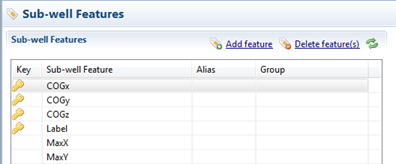

This section contains all the Subwell Features that can be used.

The Subwell Features use the same principles as the Well Features in the previous topic that they specify the Subwell level. The only difference is the amount of possible settings. Subwell Features only have "General Feature Section" and "Classification Section" settings, e.g. no color methods or dose-response settings.